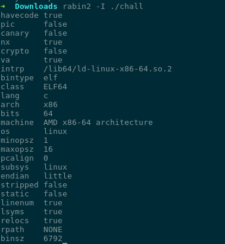

Radare2
em 20 Minutos
Final de semana passado aconteceu um CTF maneiro do PPP, com alguns desafios interessantes(Nvl Hard) de REV e eu perdi muito tempo com GDB e objdump para fazer algumas coisas que o radare2 facilita muito, além de mostrar de forma bonita para nossos olhos :D
Eu não sabia nada de radare até então, achei maneiro, logo ao iniciar fiquei perdido, mas percebi que estava bem mais perdido do que imaginava só alguns minutos após te-lo iniciado. Por isso resolvi gastar um tempo aprendendo como usar e obter o melhor do mesmo.
Foi então que eu decidir mostrar um pouco sobre ele, para que tu já adcione essa ferramenta em seu arsenal, pois é muito boa, sério muito boa mesmo.
O que é Radare
Radare é um framework Software Livre e não OpenSource como dizem por ai, já que ele está sob a GPL3. Usado para Engenharia Reversa e Análise de Binários. Ela é uma ferramenta muito poderosa, pois tu consegue fazer disassemble, pesquisa de strings, patching, comparação de dados, debug e outras coisitas mais.
Ela consegue rodar em muitas plataformas como GNU/Linux, Windows, BSD, IOS... e suporta vários formatos.
Ficou na dúvida? Da uma olhada nessa comparação dela, IDA e o Hopper!
Instalação
Para instalar é muito fácil e rápido!
$ git clone https://github.com/radare/radare2.git
$ cd radare2
$ ./sys/install.sh
Hora do show! BIRRL!
Agora que temos o r2 instalado vamos pegar um pequeno challenge pra aprender enquanto resolvemos ele, creio que assim fique mais divertido que apenas mostrar uma lista de comandos. Até porque é pra isso que existe a documentação.
Como na maioria das aplicações CLI a flag de help -h.
$ r2 -h
Para te força a fazer, não irei mostrar a saída aqui.
Informação do Binário
Sempre que estamos frente a frente com um desafio a primeira coisa que fazemos é pegar umas informações sobre o binário certo? Então vamos usar o rabin2 que faz parte do framework. Rabin2 extrair informações úteis do binário como headers, seções, strings, entrypoints... e ainda permite exportar em vários formatos. Da um man rabin2 pra tu ver.
Vamos usar esse binário para brincar!
Como podemos ver temos umas informações úteis como ELF32, not stripped, dinamically linked, não tem cripto...
Done! Happy code!PS: Não confie em ninguém, então não rode esses binários de maneira simples, coloque em um ambiente virtualizado, já que tu não conhece quem está por trás dos desafios. Nesse binário tu tem minha Dword de que não é malicioso!